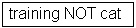

DRUM HELP
Help Contents:
Browse
Search
Advanced Search
Communities
Collections
Sign on to DRUM
Submit
File Formats
My DRUM
Edit Profile
Subscribe to Email Alerts
More Documentation
DRUM captures, distributes, and preserves University of Maryland's digital research products. Here you can find articles, working papers, preprints, technical reports, conference papers, and data sets in various digital formats. Our content grows daily as new communities and collections are added to DRUM.
The DRUM content is organized around communities which correspond to University of Maryland administrative entities, such as colleges, schools, and departments. Within each community there can be an unlimited number of collections. Within each collection there can be an unlimited number of items.
Browse
Browse allows you to go through a list of items in some specified order:
Browse by Community/Collection takes you through the communities in alphabetical order and allows you to see the collections within each community.
Browse by Title allows you to move through an alphabetical list of all titles of items in DRUM.
Browse by Author allows you to move through an alphabetical list of all authors of items in DRUM.
Browse by Date allows you to move through a list of all items in DRUM in reverse chronological order.
You may sign on to DRUM if you:
- wish to subscribe to a collection and receive e-mail updates when new items are added
- wish to go to the "My DRUM" page that tracks your subscriptions and other interactions with DRUM requiring authorization (if you are a submitter for a collection, for instance)
- wish to edit your profile
Submit is the DRUM function that enables University of Maryland faculty to add an item to DRUM. The submission process includes filling out information about the item on a metadata form and uploading the file(s) comprising the digital item. See The Guide to Submitting Items into DRUM for an introduction to this process.
My DRUM is a personal page that is maintained for each member. This page can contain a list of items that are in the submission process for a particular member or a task list of items that need attention, such as editing, reviewing, or checking.
Edit Profile allows you to change your password (if you are a non-UM user).
About DRUM takes you to information about DRUM and its development.
Search
To search all of DRUM, use the yellow search box at the top of the navigation bar on the left.
To limit your search to a specific community or collection, navigate to that community or collection and use the search bar on that page.

Here are some search hints:
What is searched in the general keyword search (yellow box)
The word(s) you enter in the search box will be searched against the title, author, subject abstract, series, sponsor, and identifier fields of each item's record.What is not searched: Stop Words
The search engine ignores certain words that occur frequently in English but that do not add value to the search. These are:"a," "and," "are," "as," "at," "be," "but," "by," "for," "if," "in," "into," "is," "it," "no," "not," "of," "on," "or," "such," "the," "to," "was"Truncation
Use an asterisk (*) after a word stem to retrieve all words starting with that root. For example:will retrieve selects, selector, selecting.
Stemming
The search engine automatically expands words with common endings to include plurals, past tenses, etc.Phrase Searching
To search using multiple words as a phrase, put quotation marks (") around the phrase.
Exact word match
Put a plus (+) sign before a word if it MUST appear in the search result. For instance, in the following search, the word "training" is optional but the word "dog" must be in the result.
Eliminate items with unwanted words
Put a minus (-) sign before a word if it should not appear in the search results. Alternatively, you can use NOT. This can limit your search to eliminate unwanted hits. For instance, in the searchor 
you will get items containing the word "training," except those that also contain the word "cat."
Boolean searching
The following Boolean operators can be used to combine terms. Note that they must be CAPITALIZED!AND - to limit searches to find items containing all words or phrases combined with this operator.
will retrieve all items that contain BOTH the words "cats" and "dogs."
OR - to enlarge searches to find items containing any of the words or phrases surrounding this operator.
will retrieve all items that contain EITHER the words "cats" or "dogs."NOT - to exclude items containing the word following this operator.
will retrieve all items that contain the word "training" EXCEPT those also containing the word "cat."Parentheses - to group search terms into sets. Operators can then be applied to the whole set.

Advanced Search
The advanced search page allows you to specify the fields you wish to search and to combine these searches with the Boolean "and," "or," or "not."
You can restrict your search to a community by clicking on the arrow to the right of the top box. If you want your search to encompass all of DRUM, leave that box in the default position.
Select the field to search in the left-hand column and enter the word or phrase you are searching in the right- hand column. You can select the Boolean operator to combine searches by clicking on the arrow to the right of the "AND" box.
Note: You must use the input boxes in order. If you leave the first one blank, your search will not work.
Communities
DRUM content is organized around communities which correspond to University of Maryland administrative entities such as colleges, schools, and departments. Within each community there can be an unlimited number of collections. Within each collection there can be an unlimited number of items.
Initially, the available communities for direct faculty submission all correspond to the administrative structure of the University of Maryland. More specialized communities and collections can be accomodated; for instance, look at the community called "Tech Reports in Computer Science and Engineering." DRUM has the flexibility to accommodate the differing needs of the campus by allowing the creation of communities that
- vary in their policies, such as:
- who contributes content
- whether there will be a review process
- who will have access, and
- vary in their workflow, i.e., reviewing, editing, metadata
Each community has its own entry page displaying information, news, and links reflecting the interests of that community, as well as a descriptive list of collections within the community.
Collections
Communities can maintain an unlimited number of collections in DRUM. Special collections can be organized around a topic, by type of information (such as working papers or datasets), or by any other sorting method a community finds useful in organizing its digital items. Collections can have different policies and workflows. Take a look at the community called "Tech Reports in Computer Science and Engineering" to see a different type of collection.
Each DRUM collection has its own entry page displaying information, news, and links reflecting the interests of users of that collection.
Sign on to DRUM
When you access an area of DRUM that requires authorization, the system will require you to log in. All users can register to become subscribers. Some restricted functions, such as item deposit, require additional authorization. See the deposit policy to learn who can deposit work to DRUM. Please use the instructions below appropriate to your affiliation.
UM Faculty, Staff, and Students
- Use the "Login" link on the left side of DRUM pages. Select "UM campus community" and use your UM Directory ID and password to log in. This is the same login and password you use to access other campus systems. OIT manages the Directory ID system and offers a Directory ID lookup at https://ldap.umd.edu/cgi-bin/chpwd?searchbyumid. If you are having problems with your Directory ID, please contact the OIT Help desk at 301-405-1500.
Other Users
- To sign onto DRUM, use the "Login" link on the left side of DRUM pages and select "Others." Before you log in for the first
time, you will need to use the "Click here to register" link and follow the instructions to create a login
and password. Your email address will be your login.
Example: moniker@umd.edu
Type your password exactly as you entered it during the registration process. It is case sensitive. Be sure to click on the "Log In" button to continue.
Submit (Deposit a work)
Stopping during the submission process:
At any point in the submission process, you can stop and save your work for a later date by clicking on the "Cancel/Save" button at the bottom of the page. The data you have already entered will be stored until you come back to the submission, and you will be reminded on your "My DRUM" page that you have a submission in process. If somehow you accidentally exit from the submit process, you can always resume from your "My DRUM" page. You can also cancel your submission at any point.
Progress Bar - Oval buttons at top of page:
At the top of the submit pages, you will find 7 oval buttons representing each step in the submission process. As you move through the process, these ovals will change color. Once you have started, you can also click on these buttons to move back and forth within the submission process. You will not lose data by moving back and forth.

Select Collection:
Click on the arrow at the right of the drop-down box to see a list of collections. Select the collection into which you wish to add your item.
(If you are denied permission to deposit a submission to the collection you choose, please contact drum-help@umd.edu for more information.)
You must be authorized to submit items to a collection. See the deposit policy to learn who can deposit work in DRUM. Authorization should occur as part of your DRUM registration. If you have registered successfully but don't have permission to submit, please contact us at drum-help@umd.edu.
Click on the "Next" button to proceed or the "Cancel/Save" button to stop and save or cancel your submission.
If you respond "yes" to any of the questions on this page, you will be presented with a modified input form tailored to capture extra information. Otherwise you will get the "regular" input form.
- More than one title - Sometimes an item has more than one title, perhaps an abbreviation, acronym, or a title in another language. If this is the case, and you want this information captured, click in the box.
- Previously issued - New items that have NOT been previously published or distributed will be assigned an issue date by the system upon DRUM distribution. If you are entering older items that have already been distributed or published, click in the box. You will receive a form prompting you for several pieces of information relating to publication.
- Multiple files - An item can consist of more than one file in DRUM. An example of this would be an article containing a text file and a video simulation and a data file. If you are submitting more than one file for this item, click in the box.
Click on the "Next" button to proceed or the "Cancel/Save" button to stop and save or cancel your submission.
The information you fill in on these two screens will form the metadata record that will enable users to retrieve your item using search engines. The richer the metadata, the more "findable" your item will be, so please take the time to fill in as many fields as are applicable to your item.
Author:
This can be a person, organization, or service responsible for creating or contributing to the content of the item. By clicking on the "Add More" button, you can add as many authors as needed. Examples:
If the author is an organization, use the last name input box for the organization name:
Title:
Enter the full and proper name by which this item should be known. All DRUM items must have a title!
Other Title: (Note: This input box appears only if you indicated on the first page that the item has more than one title.)
If your item has a valid alternative title, for instance, a title in another language or an abbreviation, then enter it here. Example:
Date of Issue: (Note: This input box appears only if you indicated on the first page that the item has been previously published or distributed. If DRUM is the first means of distribution of this item, a date will be assigned by the system when the item becomes a part of the repository.)
If your item was previously published or made public, enter the date of that event here. If you don't know the month, leave the default "no month"; otherwise, select a month from the drop-down box. If you don't know the exact day, leave that box empty.
Publisher: (Note: This input box appears only if you indicated on the first page that the item has been previously published or distributed.)
Enter the name of the publisher of this item.
Citation: (Note: This input box appears only if you indicated on the first page that the item has been previously published or distributed.)
Enter citation information for this item if it was a journal article or part of a larger work, such as a book chapter.
For journal articles, include the journal title, volume number, date and paging.
For book chapters, include the book title, place of publication, publisher name, date, and paging.
Series/Report No.:
Some of the collections in DRUM are numbered series, such as technical reports or working papers. If this collection falls into that category, then there should be a default value (which you should not change) in the Series Name box. You will have to fill in the assigned number in the Report or Paper No. input box. Examples:
Identifiers:
If you know of a unique number or code that identifies this item in some system, please enter it here. Click on the arrow to the right of the input box and select from one of the choices in the drop-down menu. The choices refer to:
- Govt.doc # - Government Document Number - e.g., NASA SP 8084
- ISBN - International Standard Book Number - e.g., 0-1234-5678-9
- ISSN - International Standard Serial Number - e.g., 1234-5678
- ISMN - International Standard Music Number - e.g., M-53001-001-3
- URI - Universal Resource Identifier - e.g., http://www.dspace.org/help/submit.html
- Other - A unique identifier assigned to the item using a system other than the above
Type:
Select the type of work (or genre) that best fits your item. To select more than one value in the list, hold down the "ctrl" or "shift" key.
Language:
Select the language of the intellectual content of your item. If the default (English - United States) is not appropriate, click on the arrow on the right of the drop down box to see a list of languages commonly used for University of Maryland publications.
If your item is not a text document and language is not applicable as description, then select the "N/A" choice.


Click on the "Next" button to proceed or the "Cancel/Save" button to stop and save or cancel your submission.
Subject/Keywords:
Please enter as many subject keywords as are appropriate to describe this item, from the general to the specific. The more words you provide, the more likely it is that users will find this item in their searches. Use one input box for each subject word or phrase. You can get more input boxes by clicking on the "Add More" button. Examples:

Your community may suggest the use of a specific vocabulary, taxonomy, or thesaurus. If this is the case, please select your subject words from that list.
Abstract:
You can either cut and paste or type an abstract into this box. There is no limit to the length of the abstract. We urge you to include an abstract for the convenience of end-users and to enhance search and retrieval capabilities.
Sponsors:
If your item is the product of sponsored research, you can provide information about the sponsor(s) here. This is a freeform field where you can enter any note you like. Example:
Description:
Here you can enter any other information describing the item you are submitting or comments that may be of interest to users of the item.
Click on the "Next" button to proceed or the "Cancel/Save" button to stop and save or cancel your submission.
There are two methods of entering the name of the file you wish to upload:
- Type the full path and file name into the input box and then click on the "Next" button in the lower right-hand corner of the screen.
- Click on the "Browse" button and a window showing your files will appear. You can navigate through your
directories and folders until you find the correct file to upload. Double-click on the file name you wish to
upload and the name will be entered into the input box.
Note: If you are using the Netscape browser, the default file type will be set to "HTML files," so you may not see all of your files. Here is how to see all your files:
- On Windows and Macintosh computers, the window initially looks like this:

Click on the drop down arrow next to the "HTML Files" and select "All Files (*.*)":

- On Athena workstations and other UNIX systems, the window initially looks like this:

Click to the right of the "*.html" in the top text box, and remove the ".html" with the backspace key, but leave the "*". Then, click on the "Filter" button at the bottom of the window. You will then see all of your files, like this:

Once the correct file name is in the input box, click on the "Next" button to proceed.
If you specified at the beginning of the submit process that you had more than one file to upload for this item, you will see an input box marked "File Description." The information you provide here will help users to understand what information is in each file, for instance, "main article" or "images" or "computer program" or "data set." Enter file descriptions for each item and click on the "Next" button to proceed.
File Formats
To properly archive and give access to a file, we need to know what format it is, for example, "PDF," "HTML," or "Microsoft Word." If the system does not automatically recognize the format of the file you have uploaded, you will be asked to describe it. If the format of the file appears in the list offered, click on it and then on "Submit." If you can't see the format in the list, click on "Format Not in List" and describe the format in the text box lower down on the page. Be sure to give the name of the application you used to create the file and the version of that application, for example, "Autodesk AutoCAD R20 for UNIX."
More information about file formats, including our policy for supporting specific formats and what our policy means for your files, is available in DRUM Supported Formats.
After you have uploaded a file, check the information in the table to make sure it is correct. There are two further ways to verify that your files have been uploaded correctly:
- Click on the filename. This will download the file in a new browser window so that you can check the contents.
- Compare the file checksum displayed here with the checksum you calculate.
If you're only uploading one file, click on "Next" when you're satisfied that the file has been uploaded correctly.
If you're uploading more than one file, click on the "Add Another File" button. When you are satisfied that all files for this item have been successfully uploaded, click on the "Next" button.
DRUM generates an MD5 checksum for every file it stores. We use this checksum internally to verify the integrity of files over time (a file's checksum shouldn't change). You can use this checksum to be sure what we've received is indeed the file you've uploaded.
To do this, click "Show checksums" on the "Uploaded File" page. The DRUM-generated MD5 checksum for every file we've received from you will show to the right of the filename.
You will need to use a local program to generate your own checksum for these files and to verify that your results match ours. On most UNIX-like systems (including Athena and Mac OS X), use md5sum. For instance, type "md5sum MYFILE" for every file you want to check. The summary should print on your screen.
For Windows machines, MD5 tools are freely available: try md5 (from http://www.fourmilab.ch/md5/), or md5sum, available via the textutils package in Cygwin (http://www.cygwin.com/).
All of these utilities will need to be run from a command-line, or terminal, window. The entire digest that prints out when you run the md5 tool on the local copy of the file you're uploading should be exactly equal to what DRUM reports.
This page lets you review the information you have entered to describe the item. To correct or edit information, click on the corresponding button on the right, or use the oval buttons in the progress bar at the top of the page to move around the submission pages. When you are satisfied that the submission is in order, click on the "Next" button to continue.
Click on the "Cancel/Save" button to stop and save your data or to cancel your submission.
DRUM requires agreement to this non-exclusive distribution license before your item can appear on DRUM. Please read the license carefully. If you have any questions, please contact us by email: drum-help@umd.edu.
Now that your submission has been successfully entered into the DRUM system, it will go through the workflow process designated for the collection to which you are submitting. Records go through a very minimal review process to check that the submission is complete. You will receive email notification as soon as your item has become a part of the collection or if there is a problem with your submission. If you have questions about the workflow procedures for a particular collection, please contact us by email at drum-help@umd.edu. You can check on the status of your submission by going to Submissions page under My DRUM.
Handle - Persistent Identifier
When your item becomes a part of the DRUM repository, it is assigned a persistent URL. This means that unlike most URLs, this identifier will not have to be changed when the system migrates to new hardware or when changes are made to the system. DRUM (through the University of Maryland Libraries) is committed to maintaining the integrity of this identifier so that you can safely use it to refer to your item when citing it in publications or other communications. Our persistent URLs are registered with the Handle System, a comprehensive system for assigning, managing, and resolving persistent identifiers, known as "handles," for digital objects and other resources on the Internet. The Handle System is administered by the Corporation for National Research Initiatives (CNRI), which undertakes, fosters, and promotes research in the public interest.
My DRUM
If you are an authorized DRUM submitter or if you are a staff member responsible for DRUM collection or metadata maintenance, you will have a My DRUM page. Here you will find:
- A list of your in-progress submissions (from this list you can resume the submission process where you left off or you can remove the submission and cancel the item) and
- A list of submissions that are awaiting your action (if you have a collection workflow role).
Edit Profile
This page allows you to change the information DRUM has for you. You must be authenticated with your login to change any of your personal information.
Users can subscribe to receive email alerts when new items are added to collections. Users may subscribe to as many collections as they wish. To subscribe:
- Log in to DRUM and navigate to the collection for which you would like to receive email alerts and click on the "Subscribe" button (repeat for other collections).
- Go to the "Subcribe" page to edit your subscriptions.
More Documentation
A broad range of DRUM documentation is available from within the DRUM site. Highlights include:
- About DRUM
- About submitting your work
- DRUM FAQs
- How-to's: Solutions to common problems
- The Guide to Submitting Items into DRUM
Still have questions?
General inquiries: drum-help@umd.edu, (301) 314-1328
DRUM Coordinator: Terry Owen, towen@umd.edu
Home | Browse | Search | Communities | Collections | Submit | File Formats | My DRUM | Edit Profile | Subscribe to E-mail alerts